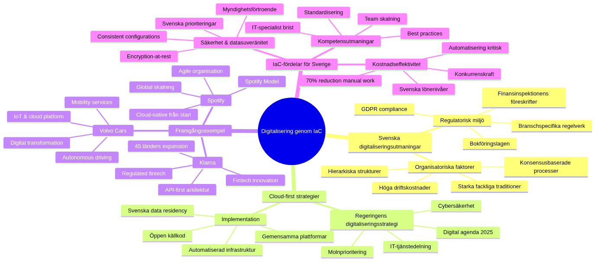

Digitalisation through Code-Based Infrastructure

Architecture as Code forms the backbone in modern digitaliseringsinitiativ by enable snabb, skalbar and kostnadseffektiv transformation of IT-environments. Diagram illustrerar The strategiska the way from traditional infrastructure to fullständigt kodbaserad digital plattform.
Svenska digitaliseringslandskapet

Mindmappen belyser the unique aspekterna of digitalisering in svensk context, from regulatory Challenges and framgångsexamples to the specific Benefits that Architecture as Code offers Swedish organizations. The shows how Cloud-first strategier, svenska digitaliseringsChallenges and internationella framgångsexamples samspelar in The svenska digitaliseringsresan.
Overall Description
Digitalisering is not only about to introducing new technology, without about a fundamental change in how organisationer delivers value to sina customers and stakeholders. Architecture as Code spelar a central roll in This transformation by enable agile, cloud-based solutions as can adapted to changing business needs with particular consideration to svenska regulatory and cultural conditions.
Svenska digitaliseringsutmaningar and possibilities
Svensk public sector and wheningsliv stands infor comprehensive digitaliseringsChallenges where traditional IT-Structures often forms flaskhalsar for innovation and effektivitet. according to Digitaliseringsstyrelsens last rapport from 2023 has Swedish organizations investerat over 180 miljarder kronor in digitaliseringsinitiativ the last five åren, but many projekt has misslyckats at grund of bristande infrastructurestyrning and technical skuld.
Architecture as Code-baserade solutions offers opportunity to bryta These begränsningar through Architecture as Code-automation, standardisering and scalability as specific adresserar svenska Challenges:
Regulatorisk compliance: Swedish organizations must navigate complex lagstiftning including GDPR, Bokforingslagen, and branschspecific regelverk that Finansinspektionens regulations for finansiella institutioner. Architecture as Code enables automatiserad compliance-checking and audit-spårning that ensure continuous regelefterlevnad.
Kostnadseffektivitet: With svenska lönenivåer and high driftskostnader is Architecture as Code-automation critical for konkurrenskraft. Architecture as Code reduces manuellt arbete with upp to 70% according to implementeringsstudier from Swedish companies that Telia and Volvo Cars.
KompetensChallenges: Sverige upplever brist at IT-specialister, which does the kritiskt to standardisera and automatisera infrastructure management. Architecture as Code enables to smaller specialized team can handle complex environments through Architecture as Codebaserade templates and Architecture as Code best practices.
Security and data sovereignty: Swedish organizations prioriterar högt security and kontroll over data. Architecture as Code enables consistent security configurations and encryption-at-rest as standard, which is essentiellt for svenska myndigheters and foretags fortroende.
The code-based infrastructureen enables DevOps-methods as sammanbinder development and drift, which results in snabbare leveranser and higher kvalitet. This is particularly viktigt for Swedish organizations as needs konkurrera at a global marknad while the follows lokala regelverk and security requirements.
Digitaliseringsprocessens dimensioner in svensk context
Digitaliseringsprocessen through Architecture as Code encompasses multiple dimensioner as is particularly relevanta for Swedish organizations:
technical transformation: Migration from on-premise datacenter to hybrid- and multi-cloud arkitekturer as respekterar svenska data residency-requirements. This includes Architecture as Code-implementation of microservices, containerisering and API-first arkitekturer as enables snabb innovation.
Organisatorisk change: Inforande of cross-funktionella team according to svenska samarbetskultur with fokus at consensus and witharbetarinflytande. Swedish organizations needs balance agila way of working with traditional hierarkiska Structures and starka fackliga traditioner.
cultural development: Change mot mer datadrivna decisionssprocesser and "fail fast"-mentalitet within ramen for svensk riskwithvetenhet and långsiktigt tänkande. This requires careful change management as respekterar svenska values about trygghet and stabilitet.
competence development: Systematisk upskilling of existing personal in Architecture as Code-technologies with fokus at svenska utbildningsmodor as combines teoretisk knowledge with praktisk application.
successful Architecture as Code-implementation requires balans between These aspects with particularly fokus at svenska organisationers behov of transparency, consensus-building and long-term sustainability.
Svenska digitaliseringsframgångar and lessons
Flera Swedish organizations has throughfort exemplariska digitaliseringstransformationer as demonstrerar Architecture as Code:s potential:
Spotify: Revolutionerade musikindustrin through cloud-native architecture from start, with Architecture as Code as enabled skalning from svenskt startup to global plattform with 500+ miljoner user. Deras "Spotify Model" for agile organisation has inspirerait companies världen over.
Klarna: Transformerade betalningsbranschen through API-first architecture byggd at Architecture as Code, which enabled expansion to 45 länder with konsistent Security and compliance. Deras approach to regulated fintech innovation has become modell for andra svenska fintechs.
Volvo Cars: Throughforde digital transformation from traditional biltoverkare to mobility service provider through comprehensive IoT- and cloud-plattform baserad at Architecture as Code. This enabled development of autonoma körtjänster and subscription-baserade affärsmodor.
Skatteverket: Moderniserade Sveriges skattesystem through cloud-first strategi with Architecture as Code, which resulterade in 99.8% uptime under deklarationsperioden and 50% snabbare handläggningstider for foretagsdeklarationer.
These framgångar shows to Swedish organizations can achieve världsledande digitalisering through strategisk use of Architecture as Code kombinerat with svenska styrkor within innovation, design and sustainability.
Cloud-first strategier for svensk digitalisering
Sverige has developed a strong position within molnteknologi, delvis driven by ambitious digitalization goals within both offentlig and privat sektor samt unique conditions as green energy, stable infrastructure and high digital maturity bland population. Cloud-first strategier means to organisationer primarily choose cloud-based solutions for new initiativ, which requires comprehensive Architecture as Code-kompetens adapted for Swedish conditions.
Regeringens digitaliseringsstrategi and Architecture as Code
Regeringens digitaliseringsstrategi "Digital agenda for Sverige 2025" emphasizes betydelsen of molnteknik to achieve målen about a digitalt sammanhållen offentlig forvaltning. Strategin specifies to svenska myndigheter should:
- Prioritera cloud-first solutions as follows EU:s rules for data sovereignty
- Implementera automatiserad architecture as enables delning of IT-services between myndigheter
- Develop gemensamma plattformar for withborgarservice baserade at öppen source code
- Ensure cybersäkerhet and beredskap through Architecture as Code-baserad infrastructure
This creates efterfrågan at Architecture as Code-solutions as can handle känslig data according to GDPR and Offentlighets- and sekretesslagen while the enables innovation and effektivitet. practical means This:
# Svenska myndigheter - architecture as code template for GDPR-compliant cloud
terraform {
required_version = ">= 1.5"
required_providers {
aws = {
source = "hashicorp/aws"
version = "~> 5.0"
}
}
# State lagring with encryption according to svenska security requirements
backend "s3" {
bucket = "svenska-myndighet-terraform-state"
key = "government/production/terraform.tfstate"
region = "eu-north-1" # Stockholm - svenska data residency
encrypt = true
kms_key_id = "arn:aws:kms:eu-north-1:ACCOUNT:key/12345678-1234-1234-1234-123456789012"
dynamodb_table = "terraform-locks"
# Audit logging for myndighetsändamål
versioning = true
lifecycle_rule {
enabled = true
expiration {
days = 2555 # 7 år according to Arkivlagen
}
}
}
}
# Svenska myndighets-tags as krävs according to Regleringsbrev
locals {
myndighet_tags = {
Myndighet = var.myndighet_namn
Verksamhetsområde = var.verksamhetsområde
Anslagspost = var.anslagspost
Aktivitet = var.aktivitet_kod
Projekt = var.projekt_nummer
Kostnadsställe = var.kostnadsställe
DataKlassificering = var.data_klassificering
Säkerhetsklass = var.säkerhetsklass
Handläggare = var.ansvarig_handläggare
Arkivklassning = var.arkiv_klassning
BevarandeTid = var.bevarande_tid
Offentlighet = var.offentlighets_princip
SkapadDatum = formatdate("YYYY-MM-DD", timestamp())
}
}
# VPC for myndighets-workloads with säkerhetszoner
resource "aws_vpc" "myndighet_vpc" {
cidr_block = var.vpc_cidr
enable_dns_hostnames = true
enable_dns_support = true
tags = merge(local.myndighet_tags, {
Name = "${var.myndighet_namn}-vpc"
Syfte = "Myndighets-VPC for digitala services"
})
}
# Säkerhetszoner according to MSB:s guidelines
resource "aws_subnet" "offentlig_zon" {
count = length(var.availability_zones)
vpc_id = aws_vpc.myndighet_vpc.id
cidr_block = cidrsubnet(var.vpc_cidr, 8, count.index)
availability_zone = var.availability_zones[count.index]
map_public_ip_on_launch = false # Ingen automatic public IP for security
tags = merge(local.myndighet_tags, {
Name = "${var.myndighet_namn}-offentlig-${count.index + 1}"
Säkerhetszon = "Offentlig"
MSB_Klassning = "Allmän handling"
})
}
resource "aws_subnet" "intern_zon" {
count = length(var.availability_zones)
vpc_id = aws_vpc.myndighet_vpc.id
cidr_block = cidrsubnet(var.vpc_cidr, 8, count.index + 10)
availability_zone = var.availability_zones[count.index]
tags = merge(local.myndighet_tags, {
Name = "${var.myndighet_namn}-intern-${count.index + 1}"
Säkerhetszon = "Intern"
MSB_Klassning = "Internt documents"
})
}
resource "aws_subnet" "känslig_zon" {
count = length(var.availability_zones)
vpc_id = aws_vpc.myndighet_vpc.id
cidr_block = cidrsubnet(var.vpc_cidr, 8, count.index + 20)
availability_zone = var.availability_zones[count.index]
tags = merge(local.myndighet_tags, {
Name = "${var.myndighet_namn}-känslig-${count.index + 1}"
Säkerhetszon = "Känslig"
MSB_Klassning = "Sekretessbelagd handling"
})
}
Svenska foretags cloud-first framgångar
Svenska companies that Spotify, Klarna and King has shown the way by bygga sina technical plattformar at molnbaserad infrastructure from foundation. Deras success demonstrerar how Architecture as Code enables snabb skalning and global expansion while technical skuld minimeras and svenska values about sustainability and innovation bevaras.
Spotify's Architecture as Code-architecture for global skalning: Spotify utvecklade their egen Architecture as Code-plattform kallad "Backstage" which enabled skalning from 1 miljon to 500+ miljoner user without linjär ökning of infrastructure complexity. Deras approach includes:
- Microservices with egen infrastructure definition per service
- Automated compliance checking for GDPR and musikrättigheter
- Cost-aware scaling as respekterar svenska hållbarhetsmål
- Developer self-service portaler as reduces time-to-market from veckor to timmar
Klarna's regulated fintech Architecture as Code: Which licensierad bank must Klarna follow Finansinspektionens strict requirements while the innoverar snabbt. Deras Architecture as Code-strategi includes:
- Automated audit trails for all infrastructure changes
- Real-time compliance monitoring according to PCI-DSS and EBA-guidelines
- immutable infrastructure as enables point-in-time recovery
- Multi-region deployment for business continuity according to BCBS standards
Cloud-leverantörers svenska satsningar
Cloud-first implementation requires dock noggrann planering of hybrid- and multi-cloud strategier. Swedish organizations must navigate between different cloud providers while the ensures data sovereignty and follows nationella security requirements.
AWS Nordic expansion: Amazon Web Services etablerade their forsta nordiska region in Stockholm 2018, specific to meet svenska and nordiska requirements at data residency. AWS Stockholm region offers:
- Fysisk data sovereignty within Sveriges gränser
- Sub-5ms latency to entire Norden
- Compliance certifieringar including C5 (Tyskland) and ISO 27001
- Dedicated support at svenska språket
Microsoft Sverige Cloud: Microsoft investerade over 2 miljarder kronor in svenska cloud-infrastructure with regioner in Gävle and Sandviken. Deras svenska satsning includes:
- Azure Government Cloud for svenska myndigheter
- Integration with svenska identity providers (BankID, Freja eID)
- Compliance with Svensk code for bolagsstyrning
- Partnership with svenska systemintegratörer that Avanade and Evry
Google Cloud Nordic: Google etablerade their forsta nordiska region in Finland 2021 but offers Swedish organizations:
- EU-baserad data processing for GDPR compliance
- Carbon-neutral operations according to svenska hållbarhetsmål
- AI/ML capabilities for svenska forskningsorganisationer
- Integration with öppen source code-ekosystem as is populärt in Sverige
Hybrid cloud strategier for Swedish organizations
Many Swedish organizations choose hybrid cloud-modor as combines on-premise infrastructure with cloud services to balance kontroll, kostnad and compliance:
# Svenska hybrid cloud architecture as code with Terraform
# On-premise VMware vSphere + AWS hybrid setup
terraform {
required_providers {
vsphere = {
source = "hashicorp/vsphere"
version = "~> 2.0"
}
aws = {
source = "hashicorp/aws"
version = "~> 5.0"
}
}
}
# On-premise Swedish datacenter
provider "vsphere" {
user = var.vsphere_user
password = var.vsphere_password
vsphere_server = var.vsphere_server # Svenskt datacenter
allow_unverified_ssl = false
}
# AWS Stockholm region for cloud workloads
provider "aws" {
region = "eu-north-1"
}
# On-premise sensitive data infrastructure
module "sensitive_workloads" {
source = "./modules/vsphere-sensitive"
# Känsliga systems as must vara on-premise
workloads = {
"hr-systems" = { cpu = 4, memory = 8192, storage = 100 }
"payroll-systems" = { cpu = 8, memory = 16384, storage = 500 }
"audit-logs" = { cpu = 2, memory = 4096, storage = 1000 }
}
# Svenska compliance requirements
data_classification = "känslig"
retention_years = 7
encryption_required = true
audit_logging = true
}
# Cloud workloads for scalable services
module "cloud_workloads" {
source = "./modules/aws-scalable"
# Public-facing services as can vara in cloud
services = {
"customer-portal" = {
min_capacity = 2,
max_capacity = 20,
target_cpu = 70
}
"api-gateway" = {
min_capacity = 3,
max_capacity = 50,
target_cpu = 60
}
"analytics-platform" = {
min_capacity = 1,
max_capacity = 10,
target_cpu = 80
}
}
# Svenska molnrequirements
region = "eu-north-1" # Stockholm
backup_region = "eu-west-1" # Dublin for DR
data_residency = "eu"
gdpr_compliant = true
}
# VPN connection between on-premise and cloud
resource "aws_vpn_connection" "hybrid_connection" {
customer_gateway_id = aws_customer_gateway.swedish_datacenter.id
type = "ipsec.1"
transit_gateway_id = aws_ec2_transit_gateway.svenska_hybrid_gateway.id
tags = {
Name = "Svenska Hybrid Cloud VPN"
Syfte = "Säker anslutning between svenskt datacenter and AWS"
}
}
automation of business processes
Architecture as Code enables automation as sträcker itself långt bortom traditional IT-drift to to encompass entire business processes with particular consideration to svenska organisationers behov of transparency, compliance and effektivitet. by definiera Architecture as Code can organisationer create självbetjäningslösningar for Developers and affärsanvändare as follows svenska Architecture as Code best practices for governance and risk management.
End-to-end processautomatisering for Swedish organizations
Moderna Swedish organizations implement comprehensive affärsprocessautomatisering as integrerar Architecture as Code with business logic to create sömlösa, compliance-withvetna workflows:
Automatisk kundregistrering with KYC (Know Your Customer):
# business_automation/swedish_customer_onboarding.py
"""
Automatiserad kundregistrering as follows svenska KYC-requirements
"""
import asyncio
from datetime import datetime
import boto3
from terraform_python_api import Terraform
class SwedishCustomerOnboarding:
"""
Automatiserad kundregistrering for svenska finansiella services
"""
def __init__(self):
self.terraform = Terraform()
self.ses_client = boto3.client('ses', region_name='eu-north-1')
self.rds_client = boto3.client('rds', region_name='eu-north-1')
async def process_customer_application(self, application_data):
"""
Bearbeta kundansökan according to svenska regulatory requirements
"""
# step 1: Validate svensk identitet with BankID
bankid_result = await self.validate_swedish_identity(
application_data['personal_number'],
application_data['bankid_session']
)
if not bankid_result['valid']:
return {'status': 'rejected', 'reason': 'Ogiltig svensk identitet'}
# step 2: KYC screening according to Finansinspektionens requirements
kyc_result = await self.perform_kyc_screening(application_data)
if kyc_result['risk_level'] == 'high':
# Automatisk escalation to compliance team
await self.escalate_to_compliance(application_data, kyc_result)
return {'status': 'manual_review', 'reason': 'Hög risk - manuell granskning krävs'}
# step 3: Automatisk infrastruktur-provisionering for new kund
customer_infrastructure = await self.provision_customer_infrastructure({
'customer_id': application_data['customer_id'],
'data_classification': 'customer_pii',
'retention_years': 7, # Svenska lagrequirements
'backup_regions': ['eu-north-1', 'eu-west-1'], # EU residency
'encryption_level': 'AES-256',
'audit_logging': True,
'gdpr_compliant': True
})
# step 4: Skapa kundkonto in secure databas
await self.create_customer_account(application_data, customer_infrastructure)
# step 5: Skicka välkomstmeddelande at svenska
await self.send_welcome_communication(application_data)
# step 6: Logga aktivitet for compliance audit
await self.log_compliance_activity({
'activity': 'customer_onboarding_completed',
'customer_id': application_data['customer_id'],
'timestamp': datetime.utcnow().isoformat(),
'regulatory_basis': 'Finansinspektionens föreskrifter FFFS 2017:11',
'data_processing_legal_basis': 'Avtal (GDPR Artikel 6.1.b)',
'retention_period': '7 år efter kontraktets upphörande'
})
return {'status': 'approved', 'customer_id': application_data['customer_id']}
async def provision_customer_infrastructure(self, config):
"""
Provisiona kundunik infrastruktur with architecture as code
"""
# Terraform configuration for new kund
terraform_config = f"""
# Kundunik infrastruktur - {config['customer_id']}
resource "aws_s3_bucket" "customer_data_{config['customer_id']}" {{
bucket = "customer-data-{config['customer_id']}-{random_id.bucket_suffix.hex}"
tags = {{
CustomerID = "{config['customer_id']}"
DataClassification = "{config['data_classification']}"
RetentionYears = "{config['retention_years']}"
GDPRCompliant = "{config['gdpr_compliant']}"
CreatedDate = "{datetime.utcnow().strftime('%Y-%m-%d')}"
Purpose = "Kunddata according to svensk finanslagstiftning"
}}
}}
resource "aws_s3_bucket_encryption_configuration" "customer_encryption_{config['customer_id']}" {{
bucket = aws_s3_bucket.customer_data_{config['customer_id']}.id
rule {{
apply_server_side_encryption_by_default {{
sse_algorithm = "{config['encryption_level']}"
}}
bucket_key_enabled = true
}}
}}
resource "aws_s3_bucket_versioning" "customer_versioning_{config['customer_id']}" {{
bucket = aws_s3_bucket.customer_data_{config['customer_id']}.id
versioning_configuration {{
status = "Enabled"
}}
}}
resource "aws_s3_bucket_lifecycle_configuration" "customer_lifecycle_{config['customer_id']}" {{
bucket = aws_s3_bucket.customer_data_{config['customer_id']}.id
rule {{
id = "customer_data_retention"
status = "Enabled"
expiration {{
days = {config['retention_years'] * 365}
}}
noncurrent_version_expiration {{
noncurrent_days = 90
}}
}}
}}
"""
# Apply Terraform configuration
tf_result = await self.terraform.apply_configuration(
terraform_config,
auto_approve=True
)
return tf_result
examples at affärsprocessautomatisering includes automatic provisionering of utvecklingsenvironments, dynamisk skalning of resurser based on affärsbelastning, samt integrated handling of Security and compliance through policy-as-code. This reduces manuellt arbete and reduces the risk of human errors while svenska requirements at transparency and traceability uppfylls.
Finansiella institutioners automatiseringslösningar
Svenska finansiella institutioner that Nordea and SEB has implementerat comprehensive automatiseringslösningar baserade at Architecture as Code to handle regulatory requirements while the delivers innovativa digitala services. These solutions enables snabb lansering of new produkter without to kompromissa with security or compliance.
SEB:s DevOps-plattform for finansiella services: SEB utvecklade a intern plattform kallad "SEB Developer Experience" which automates entire livscykeln for finansiella applications:
# SEB-inspired financial services automation
apiVersion: argoproj.io/v1alpha1
kind: Application
metadata:
name: financial-service-${service_name}
namespace: seb-financial-services
labels:
business-unit: ${business_unit}
regulatory-classification: ${regulatory_class}
cost-center: ${cost_center}
spec:
project: financial-services
source:
repoURL: https://git.seb.se/financial-infrastructure
targetRevision: main
path: services/${service_name}
helm:
values: |
financialService:
name: ${service_name}
businessUnit: ${business_unit}
regulatoryRequirements:
pciDss: ${pci_required}
mifid2: ${mifid_required}
psd2: ${psd2_required}
gdpr: true
finansinspektionen: true
security:
encryptionAtRest: AES-256
encryptionInTransit: TLS-1.3
auditLogging: comprehensive
accessLogging: all-transactions
compliance:
dataRetention: 7-years
backupRegions: ["eu-north-1", "eu-west-1"]
auditTrail: immutable
transactionLogging: real-time
monitoring:
alerting: 24x7
sla: 99.95%
responseTime: <100ms-p95
language: swedish
destination:
server: https://kubernetes.seb.internal
namespace: ${business_unit}-${environment}
syncPolicy:
automated:
prune: true
selfHeal: true
allowEmpty: false
syncOptions:
- CreateNamespace=true
- PrunePropagationPolicy=foreground
- PruneLast=true
# Svenska deployment windows according to arbetstidslagstiftning
retry:
limit: 3
backoff:
duration: 5s
factor: 2
maxDuration: 3m
# Compliance hooks for finansiella services
hooks:
- name: pre-deployment-compliance-check
template:
container:
image: seb-compliance-scanner:latest
command: ["compliance-scan"]
args: ["--service", "${service_name}", "--regulatory-class", "${regulatory_class}"]
- name: post-deployment-audit-log
template:
container:
image: seb-audit-logger:latest
command: ["log-deployment"]
args: ["--service", "${service_name}", "--timestamp", "{{workflow.creationTimestamp}}"]
automation with Machine Learning for svenska operations
automation through Architecture as Code creates also possibilities for continuous optimering of resurser and kostnader with hjälp of machine learning. Machine learning-algoritmer can analyze usage patterns and automatically adjust infrastructure for optimal performance and kostnadseffektivitet with consideration to svenska arbetstider and semesterperioder.
# ml_automation/swedish_workload_optimizer.py
"""
ML-driven infrastruktur optimering for Swedish organizations
"""
import pandas as pd
import numpy as np
from sklearn.ensemble import RandomForestRegressor
from sklearn.preprocessing import StandardScaler
import boto3
from datetime import datetime, timedelta
import tensorflow as tf
class SwedishWorkloadOptimizer:
"""
ML-baserad optimering of infrastruktur for svenska arbetsmönster
"""
def __init__(self):
self.model = RandomForestRegressor(n_estimators=100, random_state=42)
self.scaler = StandardScaler()
self.cloudwatch = boto3.client('cloudwatch', region_name='eu-north-1')
self.ec2 = boto3.client('ec2', region_name='eu-north-1')
# Svenska helger and semesterperioder
self.swedish_holidays = self._load_swedish_holidays()
self.summer_vacation = (6, 7, 8) # Juni-Augusti
self.winter_vacation = (12, 1) # December-Januari
def collect_swedish_usage_patterns(self, days_back=90):
"""
Samla användningsdata with consideration to svenska arbetstider
"""
end_time = datetime.utcnow()
start_time = end_time - timedelta(days=days_back)
# Hämta CPU utilization metrics
cpu_response = self.cloudwatch.get_metric_statistics(
Namespace='AWS/EC2',
MetricName='CPUUtilization',
Dimensions=[],
StartTime=start_time,
EndTime=end_time,
Period=3600, # Hourly data
Statistics=['Average']
)
# Skapa DataFrame with svenska arbetstider features
usage_data = []
for point in cpu_response['Datapoints']:
timestamp = point['Timestamp']
# Svenska features
is_business_hour = 8 <= timestamp.hour <= 17
is_weekend = timestamp.weekday() >= 5
is_holiday = self._is_swedish_holiday(timestamp)
is_vacation_period = timestamp.month in self.summer_vacation or timestamp.month in self.winter_vacation
usage_data.append({
'timestamp': timestamp,
'hour': timestamp.hour,
'day_of_week': timestamp.weekday(),
'month': timestamp.month,
'cpu_usage': point['Average'],
'is_business_hour': is_business_hour,
'is_weekend': is_weekend,
'is_holiday': is_holiday,
'is_vacation_period': is_vacation_period,
'season': self._get_swedish_season(timestamp.month)
})
return pd.DataFrame(usage_data)
def train_swedish_prediction_model(self, usage_data):
"""
Träna ML-modell for svenska usage patterns
"""
# Features for svenska arbetstider and kultur
features = [
'hour', 'day_of_week', 'month',
'is_business_hour', 'is_weekend', 'is_holiday',
'is_vacation_period', 'season'
]
X = usage_data[features]
y = usage_data['cpu_usage']
# Encode categorical features
X_encoded = pd.get_dummies(X, columns=['season'])
# Scale features
X_scaled = self.scaler.fit_transform(X_encoded)
# Train model
self.model.fit(X_scaled, y)
# Calculate feature importance for svenska patterns
feature_importance = pd.DataFrame({
'feature': X_encoded.columns,
'importance': self.model.feature_importances_
}).sort_values('importance', ascending=False)
print("Top Svenska Arbetsmönster Features:")
print(feature_importance.head(10))
return self.model
def generate_scaling_recommendations(self, usage_data):
"""
Generera skalningsrekommendationer for Swedish organizations
"""
# Förutsäg use for next vecka
future_predictions = self._predict_next_week(usage_data)
recommendations = {
'immediate_actions': [],
'weekly_schedule': {},
'vacation_adjustments': {},
'cost_savings_potential': 0,
'sustainability_impact': {}
}
# Analys of svenska arbetstider
business_hours_avg = usage_data[usage_data['is_business_hour'] == True]['cpu_usage'].mean()
off_hours_avg = usage_data[usage_data['is_business_hour'] == False]['cpu_usage'].mean()
vacation_avg = usage_data[usage_data['is_vacation_period'] == True]['cpu_usage'].mean()
# Rekommendationer based on svenska pattern
if off_hours_avg < business_hours_avg * 0.3:
recommendations['immediate_actions'].append({
'action': 'Implementera natt-scaling',
'description': 'Skala ner instanser 22:00-06:00 for 70% kostnadsbesparing',
'potential_savings_sek': self._calculate_savings(usage_data, 'night_scaling'),
'environmental_benefit': 'Reduced CO2 emissions during low-usage hours'
})
if vacation_avg < business_hours_avg * 0.5:
recommendations['vacation_adjustments'] = {
'summer_vacation': {
'scale_factor': 0.4,
'period': 'June-August',
'savings_sek': self._calculate_savings(usage_data, 'summer_scaling')
},
'winter_vacation': {
'scale_factor': 0.6,
'period': 'December-January',
'savings_sek': self._calculate_savings(usage_data, 'winter_scaling')
}
}
# Sustainability recommendations for Swedish organizations
recommendations['sustainability_impact'] = {
'carbon_footprint_reduction': '25-40% under off-peak hours',
'green_energy_optimization': 'Align compute-intensive tasks with Swedish hydro peak hours',
'circular_economy': 'Longer instance lifecycle through predictive scaling'
}
return recommendations
def implement_swedish_autoscaling(self, recommendations):
"""
Implementera autoscaling according to svenska rekommendationer
"""
# Skapa autoscaling policy for svenska arbetstider
autoscaling_policy = {
'business_hours': {
'min_capacity': 3,
'max_capacity': 20,
'target_cpu': 70,
'scale_up_cooldown': 300,
'scale_down_cooldown': 600
},
'off_hours': {
'min_capacity': 1,
'max_capacity': 5,
'target_cpu': 80,
'scale_up_cooldown': 600,
'scale_down_cooldown': 300
},
'vacation_periods': {
'min_capacity': 1,
'max_capacity': 3,
'target_cpu': 85,
'scale_up_cooldown': 900,
'scale_down_cooldown': 300
}
}
# Terraform for autoscaling implementation
terraform_config = self._generate_autoscaling_terraform(autoscaling_policy)
return terraform_config
def _is_swedish_holiday(self, date):
"""Check if date is Swedish holiday"""
return date.strftime('%Y-%m-%d') in self.swedish_holidays
def _get_swedish_season(self, month):
"""Get Swedish season based on month"""
if month in [12, 1, 2]:
return 'winter'
elif month in [3, 4, 5]:
return 'spring'
elif month in [6, 7, 8]:
return 'summer'
else:
return 'autumn'
def _load_swedish_holidays(self):
"""Load Swedish holiday dates"""
return [
'2024-01-01', # Nyårsdagen
'2024-01-06', # Trettondedag jul
'2024-03-29', # Långfredagen
'2024-03-31', # Påskdagen
'2024-04-01', # Annandag påsk
'2024-05-01', # Första maj
'2024-05-09', # Kristi himmelsfärdsdag
'2024-05-19', # Pingstdagen
'2024-06-06', # Nationaldagen
'2024-06-21', # Midsommarafton
'2024-11-02', # all helgons dag
'2024-12-24', # Julafton
'2024-12-25', # Juldagen
'2024-12-26', # Annandag jul
'2024-12-31', # Nyårsafton
]
API-first automation for svenska ekosystem
Swedish organizations implement also API-first strategier as enables smidig integration between interna systems and externa partners, which is particularly viktigt in The svenska contexten where many companies is del of större nordiska or europeiska ekosystem.
Digital transformation in Swedish organizations
Swedish organizations undergoes for whenvarande a of the most comprehensive digitaliseringsprocesserna in modern time. Architecture as Code forms often The technical foundation as enables This transformation by creating flexibla, skalbara and kostnadseffektiva IT-environments.
Traditionella svenska industriforetag that Volvo, Ericsson and ABB has omdefinierat sina affärsmodor through digitaliseringsinitiativ as builds on modern molninfrastructure. Architecture as Code has enabled for These companies to develop IoT-plattformar, AI-services and dataanalytiska solutions as creates new intäktsSources.
Kommunal sektor has also omfamnat Architecture as Code as A tools to modernisera withborgarservice. Digitala plattformar for e-services, öppna data and smart city-initiativ builds on kodbaserad infrastructure as can adapted to different kommuners specific behov and resurser.
Challenges within digital transformation includes kompetensbrist, cultural motstånd and complex legacy-systems. Architecture as Code contributes to to minska These Challenges by standardisera processes, enable iterativ development and reducera technical komplexitet.
Praktiska example
Multi-Cloud Digitaliseringsstrategi
# terraform/main.tf - Multi-cloud setup for svensk organisation
terraform {
required_providers {
aws = {
source = "hashicorp/aws"
version = "~> 5.0"
}
azurerm = {
source = "hashicorp/azurerm"
version = "~> 3.0"
}
}
}
# AWS for globala services
provider "aws" {
region = "eu-north-1" # Stockholm region for data sovereignty
}
# Azure for Microsoft-integrationer
provider "azurerm" {
features {}
location = "Sweden Central"
}
# Gemensam resurstagging for kostnadsstyrning
locals {
common_tags = {
Organization = "Svenska AB"
Environment = var.environment
Project = var.project_name
CostCenter = var.cost_center
DataClass = var.data_classification
}
}
module "aws_infrastructure" {
source = "./modules/aws"
tags = local.common_tags
}
module "azure_infrastructure" {
source = "./modules/azure"
tags = local.common_tags
}
Automatiserad Compliance Pipeline
# .github/workflows/compliance-check.yml
name: Compliance and Säkerhetskontroll
on:
pull_request:
paths: ['infrastructure/**']
jobs:
gdpr-compliance:
runs-on: ubuntu-latest
steps:
- uses: actions/checkout@v4
- name: GDPR Datakartläggning
run: |
# Kontrollera to all databaser has encryption aktiverad
terraform plan | grep -E "(encrypt|encryption)" || exit 1
- name: PCI-DSS Kontroller
if: contains(github.event.pull_request.title, 'payment')
run: |
# Validate PCI-DSS requirements for betalningsinfrastruktur
./scripts/pci-compliance-check.sh
- name: Svenska Säkerhetsrequirements
run: |
# MSB:s security requirements for critical infrastruktur
./scripts/msb-security-validation.sh
Self-Service Utvecklarportal
# developer_portal/infrastructure_provisioning.py
from flask import Flask, request, jsonify
from terraform_runner import TerraformRunner
import kubernetes.client as k8s
app = Flask(__name__)
@app.route('/provision/environment', methods=['POST'])
def provision_development_environment():
"""
Automatisk provisionering of utvecklingsmiljö
for svenska utvecklingsteam
"""
team_name = request.json.get('team_name')
project_type = request.json.get('project_type')
compliance_level = request.json.get('compliance_level', 'standard')
# Validate svensk organisationsstruktur
if not validate_swedish_team_structure(team_name):
return jsonify({'error': 'Invalid team structure'}), 400
# Konfigurera environment based on svenska regelverk
config = {
'team': team_name,
'region': 'eu-north-1', # Stockholm for data sovereignty
'encryption': True,
'audit_logging': True,
'gdpr_compliance': True,
'retention_policy': '7_years' if compliance_level == 'financial' else '3_years'
}
# Kör Terraform for infrastruktur-provisionering
tf_runner = TerraformRunner()
result = tf_runner.apply_configuration(
template='swedish_development_environment',
variables=config
)
return jsonify({
'environment_id': result['environment_id'],
'endpoints': result['endpoints'],
'compliance_report': result['compliance_status']
})
def validate_swedish_team_structure(team_name):
"""Validate teamnamn according to svensk organisationsstandard"""
# implementation for validation of teamstruktur
return True
Kostnadoptimering with ML
# cost_optimization/ml_optimizer.py
import pandas as pd
from sklearn.ensemble import RandomForestRegressor
import boto3
class SwedishCloudCostOptimizer:
"""
Machine Learning-baserad kostnadsoptimering
for svenska molnresurser
"""
def __init__(self):
self.model = RandomForestRegressor()
self.cloudwatch = boto3.client('cloudwatch', region_name='eu-north-1')
def analyze_usage_patterns(self, timeframe_days=30):
"""Analysera usage patterns for svenska arbetstider"""
# Hämta metriker for svenska arbetstider (07:00-18:00 CET)
swedish_business_hours = self.get_business_hours_metrics()
# Justera for svenska helger and semesterperioder
holiday_adjustments = self.apply_swedish_holiday_patterns()
usage_data = pd.DataFrame({
'hour': swedish_business_hours['hours'],
'usage': swedish_business_hours['cpu_usage'],
'cost': swedish_business_hours['cost'],
'is_business_hour': swedish_business_hours['is_business'],
'is_holiday': holiday_adjustments
})
return usage_data
def recommend_scaling_strategy(self, usage_data):
"""Rekommendera skalningsstrategi based on svenska usage patterns"""
# Träna modell to förutsäga resursanvändning
features = ['hour', 'is_business_hour', 'is_holiday']
X = usage_data[features]
y = usage_data['usage']
self.model.fit(X, y)
# Generera rekommendationer
recommendations = {
'scale_down_hours': [22, 23, 0, 1, 2, 3, 4, 5, 6], # Nattimmar
'scale_up_hours': [8, 9, 10, 13, 14, 15], # Arbetstid
'weekend_scaling': 0.3, # 30% of vardagcreatecitet
'summer_vacation_scaling': 0.5, # Semesterperiod juli-augusti
'expected_savings': self.calculate_potential_savings(usage_data)
}
return recommendations
Summary
The modern Architecture as Code methodology represents framtiden for infrastructure management in Swedish organizations. Digitalisering through kodbaserad infrastructure represents a fundamental change in how Swedish organizations delivers IT-services and creates affärsvärde. Architecture as Code enables The flexibilitet, scalability and security as krävs for successful digital transformation.
Framgångsfaktorer includes strategisk planering of cloud-first initiativ, comprehensive automation of business processes, samt continuous competence development within organisationen. Swedish organizations as omfamnar These principles position themselves starkt for framtiden.
Viktiga lessons from svenska digitaliseringsinitiativ shows to technical transformation must kombineras with organisatorisk and cultural change to achieve bestående resultat. Architecture as Code forms The technical foundation, but success requires helhetsperspektiv at digitalisering.
Sources and referenser
- Digitaliseringsstyrelsen. "Digitaliseringsstrategi for Sverige." Regeringskansliet, 2022.
- McKinsey Digital. "Digital Transformation in the Nordics." McKinsey & Company, 2023.
- AWS. "Cloud Adoption Framework for Swedish organizations." Amazon Web Services, 2023.
- Microsoft. "Azure for svensk public sector." Microsoft Sverige, 2023.
- SANS Institute. "Cloud Security for nordiska organisationer." SANS Security Research, 2023.
- Gartner. "Architecture as Code Trends in Europe." Gartner Research, 2023.